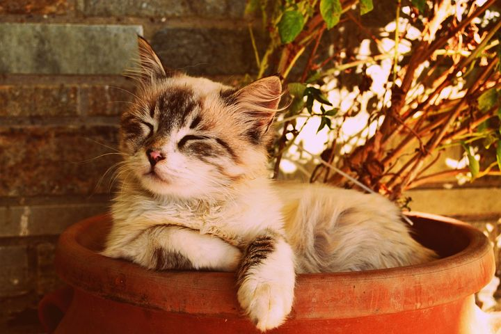

¿Que son los gatos?
Los gatos, también conocidos como Felis catus, son mamíferos carnívoros domesticados que pertenecen a la familia Felidae. Son conocidos por su independencia, inteligencia, comportamiento juguetón y afecto hacia sus dueños.
Comportamiento y hábitos
Los gatos son animales crepusculares, lo que significa que están más activos al amanecer y al atardecer. Son conocidos por su naturaleza curiosa e independiente, y disfrutan de explorar su entorno y jugar con diversos objetos. También son animales muy limpios y pasan gran parte del día acicalándose.


Comunicación:
Los gatos se comunican entre sí y con los humanos de diversas maneras, incluyendo:
- Vocalizaciones: Los maullidos, ronroneos, bufidos y siseos tienen diferentes significados, dependiendo del tono, la duración y el contexto.
- Lenguaje corporal: La posición de la cola, las orejas y los ojos, así como la postura general del cuerpo, pueden indicar el estado de ánimo y las intenciones del gato.
- Marcas olfativas: Los gatos tienen glándulas odoríferas en diferentes partes del cuerpo, como las mejillas, la frente y la cola, que utilizan para marcar su territorio y a los miembros de su grupo.
Socialización
Los gatos son animales sociales que forman fuertes lazos con sus madres y compañeros de camada. En la naturaleza, viven en grupos llamados colonias, donde cooperan para cazar, criar a sus crías y defenderse de los depredadores.

Comportamientos instintivos:
- Caza: Los gatos son cazadores naturales y tienen un fuerte instinto de presa. Incluso los gatos domésticos que tienen comida a su disposición disfrutan de cazar pequeños animales.
- Aseo: Dedican alrededor del 15% de su día acicalándose. Esto les ayuda a mantener su pelaje limpio, libre de parásitos y a regular su temperatura corporal.
- Rascado: Rascar es un comportamiento instintivo que les permite marcar su territorio, eliminar las capas externas de sus uñas y estirar sus músculos.
- Marcado de territorio: Los gatos marcan su territorio mediante la orina, las heces y frotando su cuerpo contra objetos.
Importancia cultural
Los gatos han desempeñado un papel importante en diversas culturas throughout history. En algunas religiones, se les consideraba seres sagrados o dioses.
En otras culturas, se les veía como cazadores de plagas o incluso como símbolos de buena suerte.
En la actualidad, los gatos siguen siendo una parte importante de la sociedad humana.
Se les encuentra en hogares de todo el mundo, y su imagen se utiliza en diversos productos, desde arte y literatura hasta ropa y publicidad.
En resumen, los gatos son criaturas fascinantes que han cautivado a los humanos durante miles de años. Su inteligencia, independencia, belleza y capacidad para brindar afecto los convierten en compañeros ideales para muchas personas